Cada sobrevivente possui uma verdade. Cada verdade possui um peso. E algumas histórias são impossíveis de esquecer. Agora é sua vez de atravessar esse mundo e mergulhar profundamente em cada trajetória. Escolha um personagem… e descubra o que realmente existe por trás das cicatrizes.
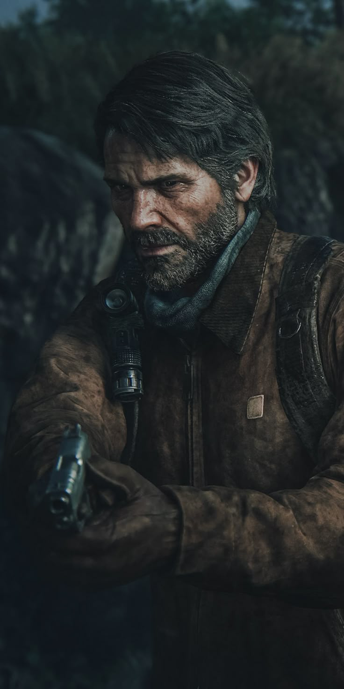
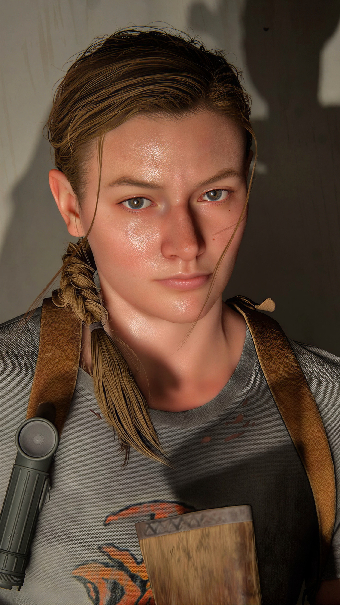
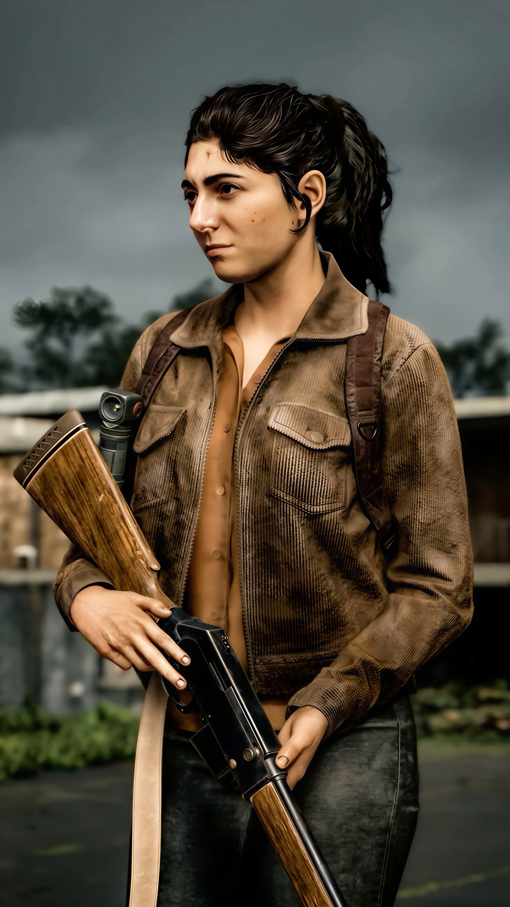
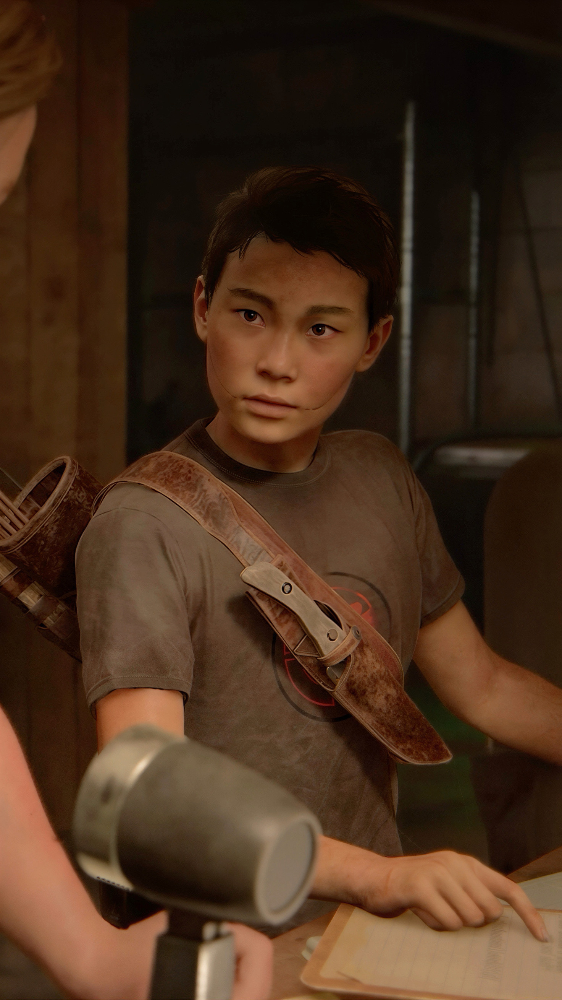
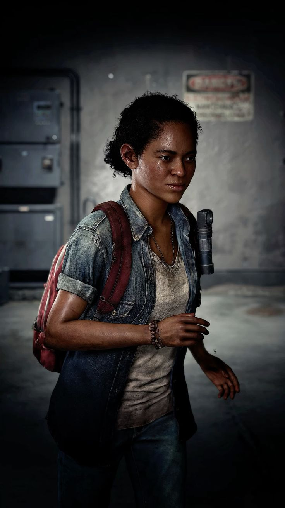
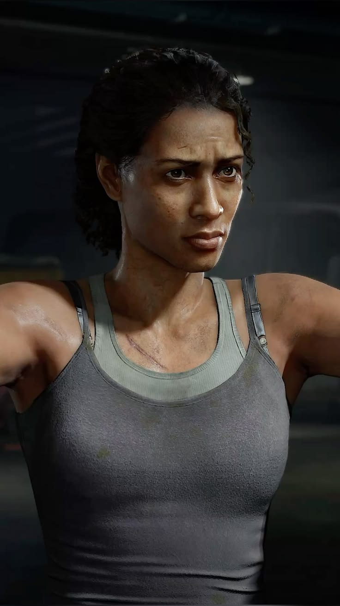
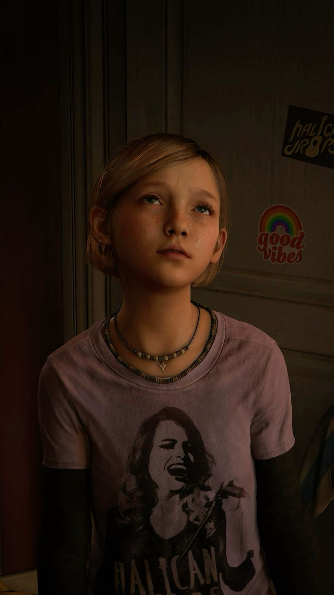
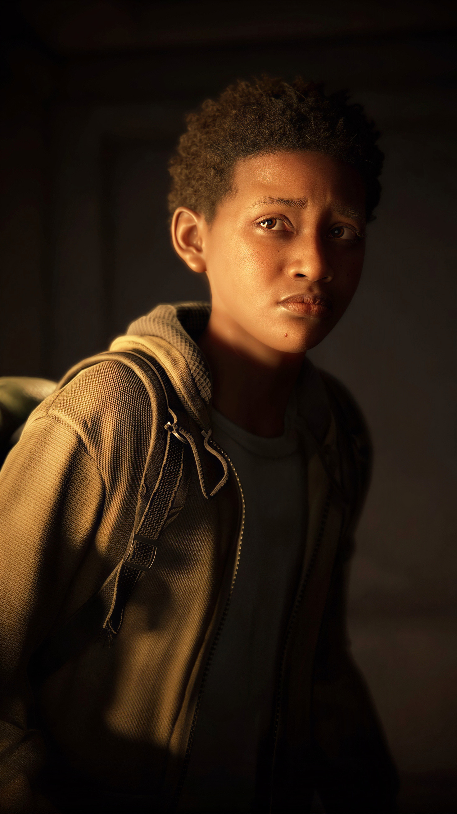
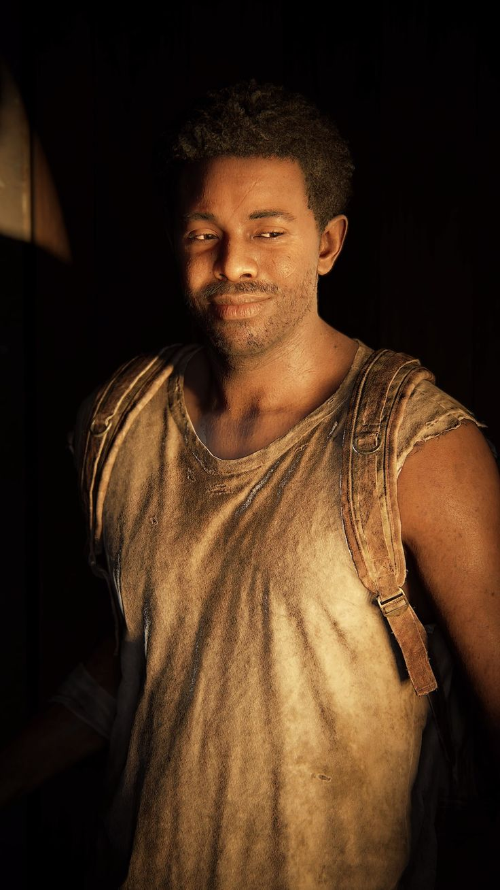
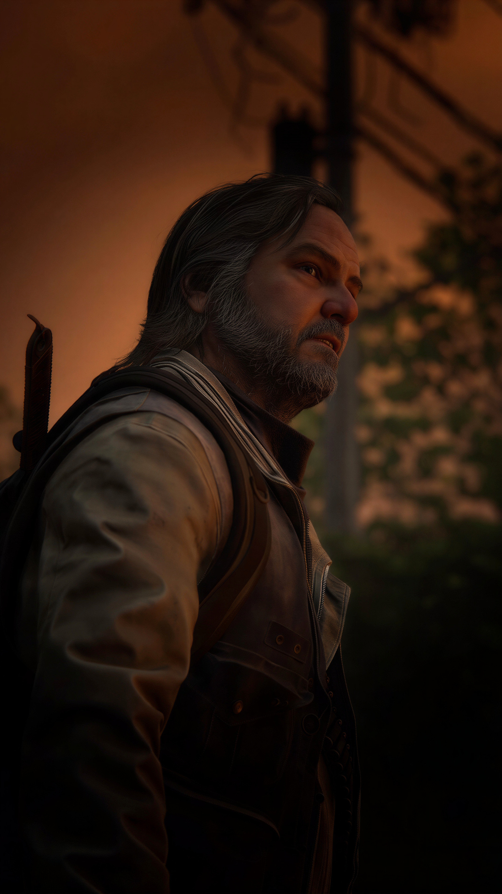
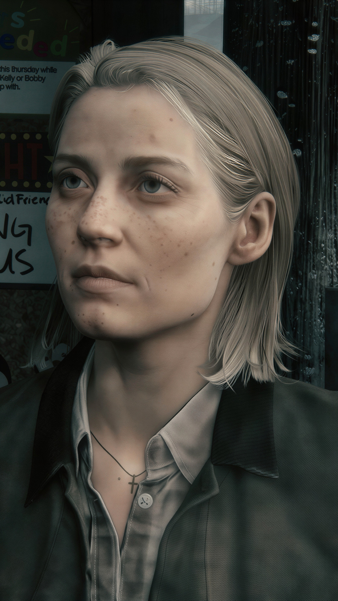
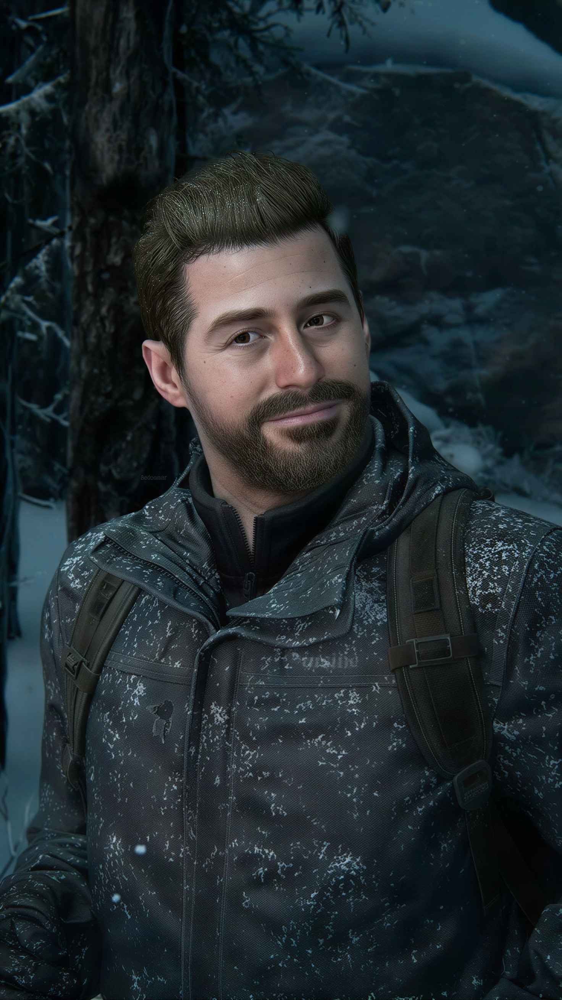
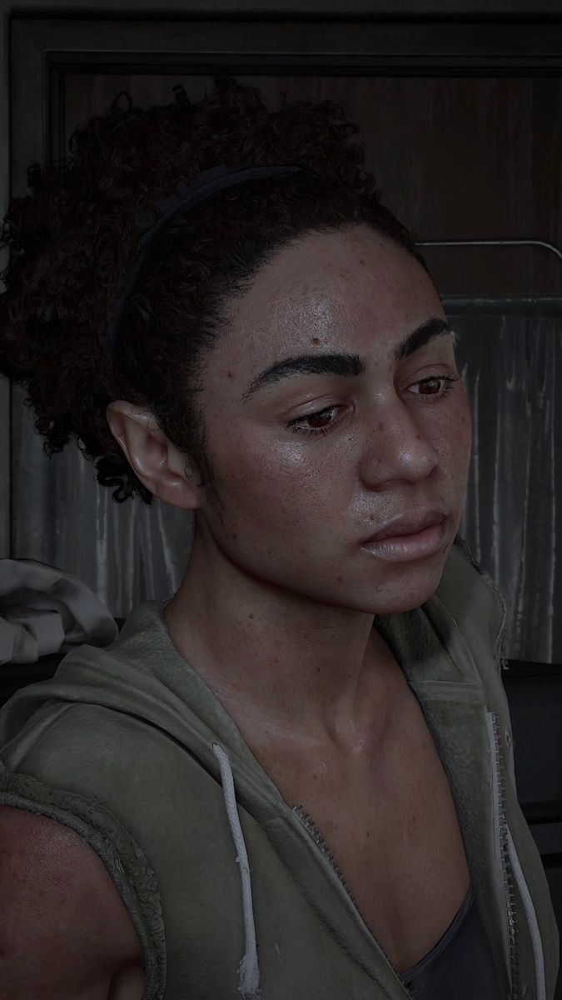
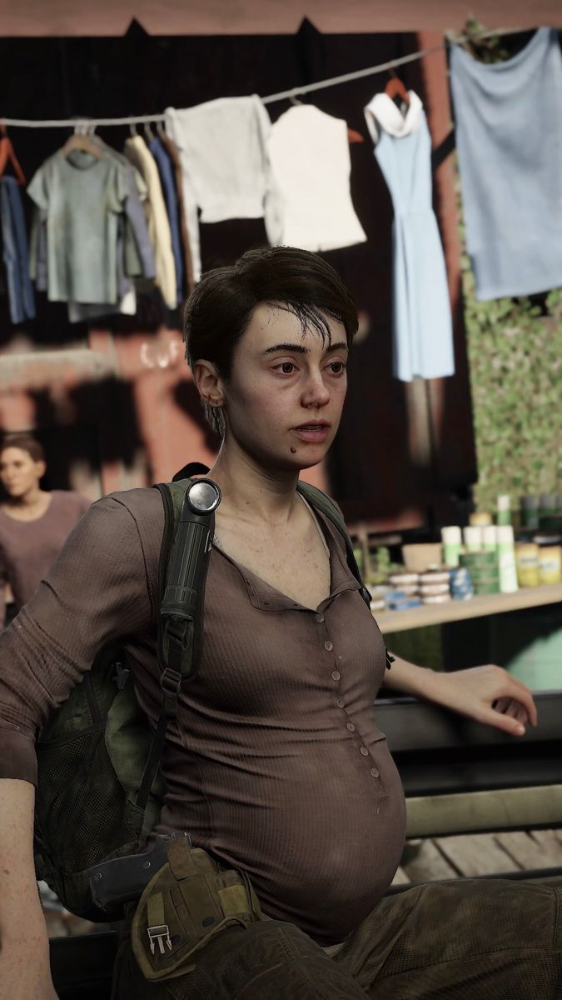
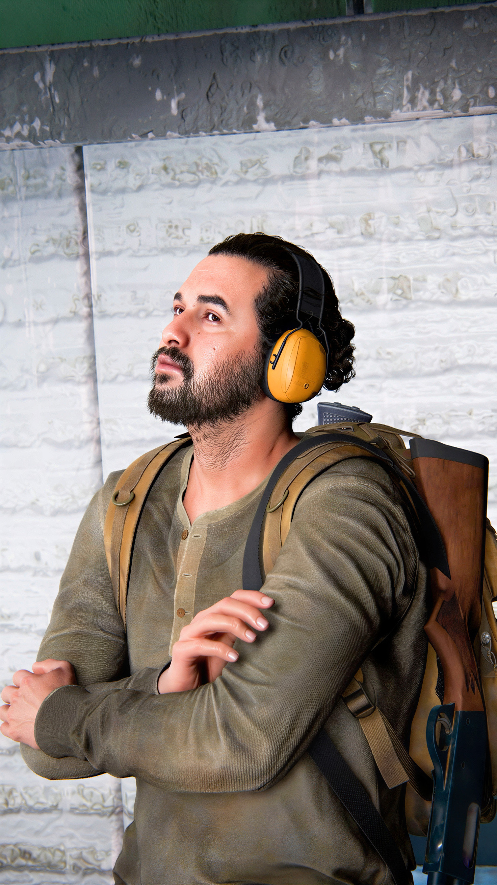
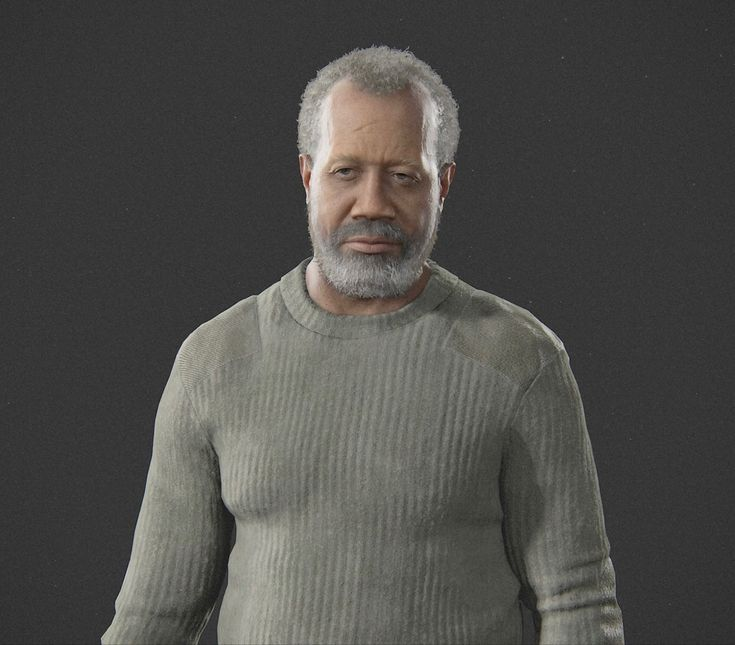